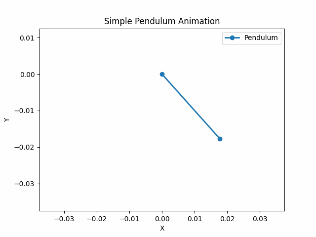
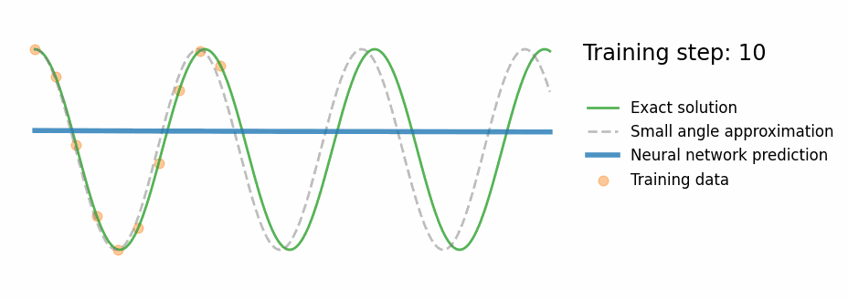
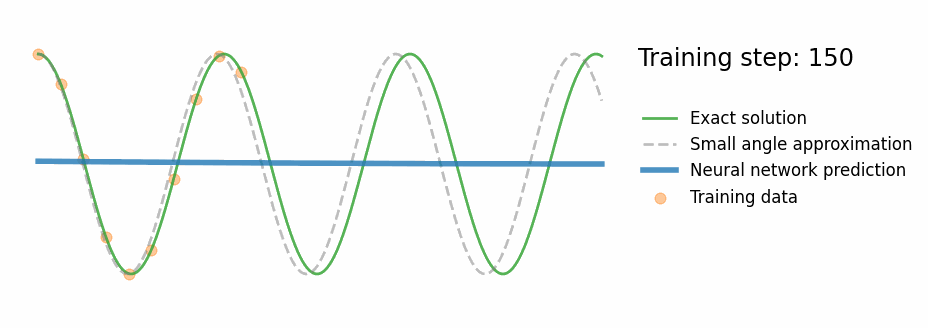

What is a Physics-Informed Neural Network?
A Physics-Informed Neural Network (PINN) is a neural network that is trained to respect the laws of physics governing a system, even when training data is sparse. The idea was formalised by Raissi, Perdikaris & Karniadakis (2019) and has since been applied to fluid dynamics, heat transfer, structural mechanics, and many other fields.
The core concept is elegantly simple: instead of minimising only the data-fitting loss, the PINN also minimises the ODE/PDE residual — the degree to which the network's prediction violates the governing equations.
Standard Neural Network
- Minimises data loss only
- Has no knowledge of physics
- Fits well in training region
- Extrapolates poorly — wrong physics
- Violates conservation laws
Physics-Informed NN (PINN)
- Minimises data loss and ODE residual
- Equations of motion baked into training
- Fits well in training region
- Extrapolates correctly — obeys physics
- Approximately conserves energy, momentum
PINN Workflow
Define ODE/PDE, domain, initial & boundary conditions
Gather sparse observations (can be just a few points!)
Fully-connected net with Tanh activation (smooth & differentiable)
Sample physics constraint points across the full domain
$\mathcal{L} = \mathcal{L}_{\text{data}} + \lambda\,\mathcal{L}_{\text{physics}}$
Compute $d^2\mathcal{N}/dt^2$ via PyTorch backprop for ODE residual
Jointly minimise data fit and physics violation
Verify conservation laws, compare with reference solution
Applications of PINNs
Fluid Dynamics
Heat Transfer
Structural Mechanics
Quantum Chemistry
Orbital Mechanics
Medical Imaging
Problem 1 — Simple Pendulum
A pendulum bob of mass $m$ suspended from a pivot by a rigid rod of length $L$ performs periodic motion under gravity. This is a classic nonlinear ODE — the ideal benchmark for PINNs because the exact numerical solution is readily available yet the small-angle analytical approximation fails at large amplitudes.

Fig. Pendulum oscillation (numerical integration)
Governing ODE
Newton's second law along the arc gives:
$$\boxed{\ddot{\theta} + \frac{g}{L}\sin\theta = 0}$$This is a nonlinear, second-order ODE. No closed-form solution exists for arbitrary amplitudes — it requires numerical integration or a PINN.
| Parameter | Value | Meaning |
|---|---|---|
| $L$ | 0.025 m | Rod length |
| $g$ | 9.81 m/s² | Gravity |
| $\omega$ | ≈ 19.8 rad/s | Natural frequency |
| $\theta_0$ | $\pi/4$ rad | Initial angle (45°) |
Small-Angle Approximation
For $\theta \ll 1\,\text{rad}$, we use $\sin\theta\approx\theta$, giving the linear harmonic oscillator:
$$\ddot{\theta} + \omega^2\theta = 0 \quad\Rightarrow\quad \theta_{\text{approx}}(t) = \theta_0\cos(\omega t)$$Standard NN — Data Only
A fully-connected network (3 hidden layers × 32 neurons, Tanh activation) is trained for 1000 epochs on 10 sparse data points sampled from the first 40% of the time window. The loss is pure data MSE:
$$\mathcal{L}_{\text{NN}} = \frac{1}{N}\sum_{i=1}^{N}\left(\hat{\theta}(t_i) - \theta_{\text{true}}(t_i)\right)^2$$
- Fits training data (orange dots) well
- Has no idea what happens after $t \approx 0.4\,\text{s}$
- Extrapolates as a smooth polynomial — not an oscillation
- Violates energy conservation
PINN Architecture
Same network skeleton — what changes is the loss function.
| Layer | Size | Activation |
|---|---|---|
| Input | 1 ($t$) | — |
| Hidden 1 | 32 | Tanh |
| Hidden 2 | 32 | Tanh |
| Hidden 3 | 32 | Tanh |
| Output | 1 ($\hat\theta$) | Linear |
PINN Loss Function — Pendulum
Data Loss
$$\mathcal{L}_{\text{data}} = \frac{1}{N}\sum_{i=1}^{N}\left(\hat\theta(t_i) - \theta_i\right)^2$$ Fits the 10 sparse observations (orange dots)Physics Loss (ODE Residual)
$$\mathcal{L}_{\text{physics}} = \frac{1}{M}\sum_{j=1}^{M}\!\left(\frac{d^2\hat\theta}{dt^2}\bigg|_{t_j} + \frac{g}{L}\sin\hat\theta(t_j)\right)^{\!2}$$ Enforces the pendulum ODE at 30 collocation points across full domain
The autograd chain: forward pass $\to$ $\hat\theta(t)$ $\to$
torch.autograd.grad $\to$ $\dot{\hat\theta}$ $\to$
torch.autograd.grad $\to$ $\ddot{\hat\theta}$ $\to$ residual $\to$ loss.
PINN Results — Pendulum

Fig. PINN training progress — the prediction converges to the exact nonlinear solution
- Correct oscillation beyond training window
- Tracks exact numerical ODE (not the approximation)
- ~10–20× lower MAE in extrapolation region vs standard NN
| Metric | NN | PINN |
|---|---|---|
| Train MAE | ~0.003 | ~0.003 |
| Extrap. MAE | ~0.15 | ~0.005 |
Key Code — Pendulum PINN Physics Loss
import torch, torch.nn as nn
k = (9.81 / 0.025) # omega^2 = g/L
# Collocation points — physics constraint over full domain
x_physics = torch.linspace(0, 1.0, 30).view(-1, 1).requires_grad_(True)
for i in range(20000):
optimizer.zero_grad()
# Data loss
loss_data = torch.mean((model(x_data) - y_data) ** 2)
# Physics loss — enforce d²θ/dt² + (g/L)sin(θ) = 0
yhp = model(x_physics)
dθ = torch.autograd.grad(yhp, x_physics, torch.ones_like(yhp), create_graph=True)[0]
d²θ = torch.autograd.grad(dθ, x_physics, torch.ones_like(dθ), create_graph=True)[0]
residual = d²θ + k * torch.sin(yhp) # should be 0
loss_phys = torch.mean(residual ** 2)
loss = loss_data + 1e-4 * loss_phys
loss.backward()
optimizer.step()
Problem 2 — Kepler Orbit Reconstruction
Can a neural network reconstruct a complete planetary orbit when it has only seen 40% of it? A standard NN cannot — but a PINN guided by Newton's universal law of gravitation can, because it "knows" that trajectories must obey $\ddot{\mathbf{r}} = -GM\mathbf{r}/r^3$.
Two-body gravitational problem in 2D
Kepler's Three Laws (1609–1619)
| Law | Statement |
|---|---|
| 1st | Planets orbit in ellipses with the Sun at one focus |
| 2nd | Equal areas swept in equal time (angular momentum conservation) |
| 3rd | $T^2 \propto a^3$ — period² $\propto$ semi-major axis³ |
These laws all follow from Newton's universal law of gravitation:
$$\mathbf{F} = -\frac{GMm}{r^2}\hat{r}$$Governing Equations — Kepler Orbit
In 2D Cartesian coordinates $(x, y)$, with the central body at the origin:
$$\boxed{\ddot{x} = -\frac{GM\,x}{r^3}, \qquad \ddot{y} = -\frac{GM\,y}{r^3}, \qquad r = \sqrt{x^2+y^2}}$$
This is a 4D first-order coupled ODE system
(state = $[x, y, v_x, v_y]$), solved numerically with
scipy.integrate.odeint at $10^{-10}$ relative tolerance to provide the reference.
$$x_0 = a(1-e),\quad y_0 = 0$$ $$v_{x0} = 0,\quad v_{y0} = \sqrt{\frac{GM(1+e)}{a(1-e)}} \quad\text{(vis-viva)}$$
| Parameter | Value |
|---|---|
| $GM$ | 1.0 (dimensionless) |
| Semi-major axis $a$ | 1.0 |
| Eccentricity $e$ | 0.5 |
| Period $T$ | $2\pi \approx 6.28$ |
| Training data | First 40% of orbit (sparse) |
Conservation Laws
The Kepler problem has two important integrals of motion (constants along any physical trajectory):
Total Energy
$$E = \frac{1}{2}(v_x^2 + v_y^2) - \frac{GM}{r} = \text{const}$$ Kinetic + gravitational potential energy is conservedAngular Momentum (Kepler 2nd Law)
$$L = x\,v_y - y\,v_x = \text{const}$$ Equal areas in equal times — the planet moves fastest at periapsis, slowest at apoapsisStandard NN — Orbital Failure
A standard NN trained on positions from the first 40% of the orbit attempts to continue the trajectory — but has no concept of closed ellipses.
- NN fits the training arc correctly
- Beyond the training window, the predicted orbit spirals outward or flies off
- Energy and angular momentum are not conserved
- The orbit never closes — violates Kepler's 1st law
Standard NN prediction flies off into space — it has never been told that gravity pulls the satellite back.
PINN Architecture — Kepler
| Layer | Size | Notes |
|---|---|---|
| Input | 1 ($t$) | scalar time |
| Hidden 1–3 | 64 | Tanh |
| Output | 2 ($\hat{x}, \hat{y}$) | Linear |
Larger (64 neurons vs 32) because the 2D orbit is more complex than the 1D pendulum angle.
Physics Loss — Newton's Gravity Residuals
$$\mathcal{L}_{\text{physics}} = \frac{1}{M}\sum_{j=1}^{M}\left[\left(\ddot{\hat{x}} + \frac{GM\hat{x}}{r^3}\right)^2 + \left(\ddot{\hat{y}} + \frac{GM\hat{y}}{r^3}\right)^2\right]$$ Both $x$ and $y$ components of Newton's law are enforced simultaneously. Each requires two sequential autograd calls (velocity then acceleration).PINN Results — Kepler Orbit
- Trained on just 40% of the orbit
- Correctly closes the ellipse for the remaining 60%
- Periapsis and apoapsis positions match reference
- Approximately conserves energy and angular momentum
| Metric | NN | PINN |
|---|---|---|
| Train MAE | ~0.005 | ~0.005 |
| Extrap. MAE | ~0.4 | ~0.01 |
| Energy conserved? | No | Approximately |
| Orbit closes? | No | Yes |
Collocation strategy:
50 collocation points are uniformly distributed over the full time domain $[0, 1.5T]$ — including the 60% of the orbit where there is no training data. This is what allows the physics constraint to guide extrapolation.
Key equation enforced:
$\ddot{\mathbf{r}} = -GM\mathbf{r}/r^3$ at every collocation point
Conservation Law Verification
After training, we compute energy $E$ and angular momentum $L$ along the PINN-predicted trajectory (using numerical gradients of the output) and compare to the exact values.
Key Code — Kepler PINN Physics Loss
GM = 1.0 # dimensionless
# Collocation points over full orbit (including unseen region!)
t_phys = torch.linspace(0, T_sim, 50).view(-1,1).requires_grad_(True)
for epoch in range(30000):
optimizer.zero_grad()
# ── Data loss ───────────────────────────────────────────────
loss_data = torch.mean((model(t_data) - xy_data) ** 2)
# ── Physics loss — Newton's gravity ─────────────────────────
pred = model(t_phys) # shape (M, 2): columns = [x̂, ŷ]
xp, yp = pred[:,0:1], pred[:,1:2]
# velocities (1st autograd)
vx = torch.autograd.grad(xp, t_phys, torch.ones_like(xp), create_graph=True)[0]
vy = torch.autograd.grad(yp, t_phys, torch.ones_like(yp), create_graph=True)[0]
# accelerations (2nd autograd)
ax = torch.autograd.grad(vx, t_phys, torch.ones_like(vx), create_graph=True)[0]
ay = torch.autograd.grad(vy, t_phys, torch.ones_like(vy), create_graph=True)[0]
# gravitational acceleration from predicted position
r = torch.sqrt(xp**2 + yp**2 + 1e-8)
ax_grav = -GM * xp / r**3
ay_grav = -GM * yp / r**3
# ODE residuals: ẍ - ax_grav = 0 and ÿ - ay_grav = 0
res_x = ax - ax_grav
res_y = ay - ay_grav
loss_phys = torch.mean(res_x**2 + res_y**2)
loss = loss_data + 1e-3 * loss_phys
loss.backward()
optimizer.step()
Side-by-Side Comparison
| Feature | Standard NN | Pendulum PINN | Kepler PINN |
|---|---|---|---|
| Physics encoded | None | $\ddot\theta + (g/L)\sin\theta = 0$ | $\ddot{\mathbf{r}} = -GM\mathbf{r}/r^3$ |
| ODE order | — | 2nd order, scalar | 2nd order, 2D vector |
| Network output | $\hat\theta(t)$ | $\hat\theta(t)$ | $(\hat{x}(t),\hat{y}(t))$ |
| Network size | 3 × 32 | 3 × 32, Tanh | 4 × 64, Tanh |
| Training data | 10 pts (40% window) | 10 pts (40% window) | ~27 pts (40% orbit) |
| Collocation pts | None | 30 (full domain) | 50 (full domain) |
| Training epochs | 5,000 | 20,000 | 30,000 |
| Training region MAE | ~0.003 | ~0.003 | ~0.005 |
| Extrapolation MAE | ~0.15 ❌ | ~0.005 ✅ | 0.1 ❌ |
| Conservation satisfied | No | Approximately | Approximately |
Code & Resources
Pendulum PINN Repository
Full Python script, Jupyter notebook walkthrough, training animations and README.
Simple_Pendulum_PINN.py— standalone scriptPendulum_PINN_Walkthrough.ipynb— 11-section notebooknn.gif/pinn.gif— training animations
Kepler Orbit PINN Repository
Full Python script, Jupyter notebook with conservation law verification and orbital animations.
Kepler_PINN.py— standalone scriptKepler_PINN_Walkthrough.ipynb— 14-section notebooknn_kepler.gif/pinn_kepler.gif— animations
Quick Start
# Install dependencies
pip install torch numpy scipy matplotlib pillow jupyter
# Pendulum PINN
git clone https://github.com/swarnadeepseth/Physics_Informed_NN-Pendulum
cd Physics_Informed_NN-Pendulum && mkdir plots
python Simple_Pendulum_PINN.py
# Kepler Orbit PINN
git clone https://github.com/swarnadeepseth/Physics_Informed_NN-Kepler
cd Physics_Informed_NN-Kepler && mkdir plots
python Kepler_PINN.py
References
- Raissi, M., Perdikaris, P., & Karniadakis, G.E. (2019). Physics-informed neural networks: A deep learning framework for solving forward and inverse problems. Journal of Computational Physics, 378, 686–707. [Link]
- Greydanus, S., Dzamba, M., & Yosinski, J. (2019). Hamiltonian Neural Networks. NeurIPS 2019. [arXiv]
- Cranmer, M. et al. (2020). Lagrangian Neural Networks. ICLR 2020 Workshop. [arXiv]
- Ben Moseley's PINN blog post: "So, what is a physics-informed neural network?"
- Karniadakis, G.E. et al. (2021). Physics-informed machine learning. Nature Reviews Physics, 3, 422–440. [Link]